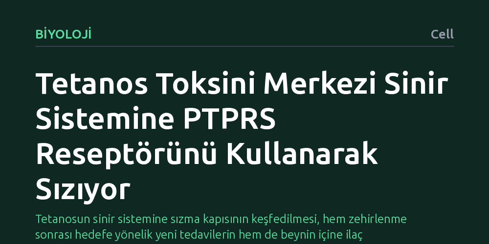

BIYOLOJI · Cell · 2026-10-14
Araştırmacılar, tetanos toksininin motor sinir hücreleri üzerinden omuriliğe nasıl taşındığını inceledi. Toksinin merkezi sinir sistemine geriye doğru taşınmasını sağlayan ve uzun süredir aranan kilit reseptörün PTPRS proteini olduğu belirlendi.
Tetanosun sinir sistemine sızma kapısının keşfedilmesi, hem zehirlenme sonrası hedefe yönelik yeni tedavilerin hem de beynin içine ilaç taşıyabilecek yeni yöntemlerin geliştirilmesine zemin hazırlıyor.

Tetanos bakterisinin ürettiği toksin, kas kontrolünü sağlayan motor sinir hücreleri üzerinden merkezi sinir sistemine sızarak şiddetli kas spazmlarına ve ölüme yol açabilen son derece tehlikeli bir zehirdir. Tıp dünyası toksinin vücuda girdikten sonra sinir uçlarından omuriliğe doğru geriye dönük bir yolculuk yaptığını uzun zamandır biliyordu. Ancak bu ölümcül kargonun sinir hücresi boyunca omuriliğe kadar hangi moleküler araçla taşındığı bilinmiyordu.
Bu taşıma mekanizmasının gizemini koruması, zehirlenme oluştuktan sonra toksini doğrudan hedef almayı zorlaştırıyordu. Mevcut aşı ve antikorlar toksini henüz kana karıştığında etkisiz hale getirebilse de, zehir sinir hücresinin içine girdikten sonra onu durduracak hedefe yönelik bir tedavi bulunmuyordu. Bu nedenle toksinin hücre içindeki hareketini yöneten biyolojik mekanizmanın deşifre edilmesi kritik bir bilimsel hedefti.
Araştırmacılar, tetanos nörotoksininin motor sinir hücreleri içine nasıl alındığını ve hücre gövdesine doğru nasıl ilerletildiğini anlamak için moleküler biyoloji ve hücre kültürü yöntemlerine başvurdu. Toksinin hücre zarıyla temas kurduğu ilk andan omuriliğe yönlendirildiği aşamaya kadar etkileşime girdiği proteinler laboratuvar ortamında titizlikle tarandı.
Deneysel süreçte, sinir hücrelerindeki veziküllerin yani molekül taşıyan hücresel keseciklerin hareketleri izlendi. Toksinin bağlandığı varsayılan yüzey proteinleri tek tek incelenerek, toksini omurilik yönüne doğru hareket ettiren spesifik kargo reseptörünün kimliği deneysel modellerde sınandı.
Deneylerin sonucunda, tetanos toksininin omuriliğe taşınmasını yöneten ve yıllardır aranan geriye doğru taşıma reseptörünün PTPRS adlı protein olduğu belirlendi. PTPRS, toksinin motor sinir hücrelerinin uçlarından içeri alınmasını ve hücresel taşıma ağları boyunca omuriliğe kadar güvenle iletilmesini doğrudan koordine ediyor.
Bulgular, toksinin sinir sistemine rastgele dağılmadığını, konak organizmanın kendi hücresel yolaklarından biri olan PTPRS sistemini bir tür 'truva atı' gibi kullandığını gösterdi. Toksin bu reseptöre tutunarak merkezi sinir sisteminin korunaklı savunma hatlarını aşmayı başarıyor.
Bu mekanizmanın açığa çıkarılması, toksine maruz kalındıktan sonra uygulanabilecek yeni tedavi stratejileri için somut bir hedef sunuyor. PTPRS ile toksin arasındaki etkileşimi engelleyecek moleküller geliştirilirse, toksin sinir hücresine girmiş olsa bile omuriliğe ve beyne ulaşması durdurulabilir.
Çalışmanın bir diğer önemli potansiyeli ise tersine mühendislik imkânı yaratmasıdır. Merkezi sinir sistemine ilaç ulaştırmak kan-beyin bariyeri nedeniyle tıbbın en zorlu alanlarından biridir. Tetanos toksininin PTPRS aracılığıyla kullandığı bu taşıma yolu taklit edilerek, sinir sistemindeki hastalıklı bölgelere tedavi edici moleküller taşınabilir.